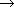

Copyright ©1995 by NeXT Computer, Inc. All Rights Reserved.
| SNDAcquire(), SNDReset(), SNDRelease() |
| SUMMARY Access sound resources
DECLARED IN sound/accesssound.h SYNOPSIS int SNDAcquire(int soundResource, int priority, int preempt, int timeout, SNDNegotiationFun negFun, void *arg, port_t *devicePort, port_t *ownerPort) |
| int SNDReset(int soundResource, port_t devicePort, port_t ownerPort) int SNDRelease(int soundResource, port_t *devicePort, port_t *ownerPort) |
| DESCRIPTION SNDAcquire() attempts to gain ownership of the sound resources specified in soundResource, a value that's created by (bitwise) or'ing a combination of the following resource codes: |
| Code | Resource | |
| SND_ACCESS_OUT | sound-out | |
| SND_ACCESS_IN | sound-in | |
| SND_ACCESS_DSP | the DSP |
| Alternatively, you can acquire the sound driver device port without gaining ownership of the device by passing 0 as the value of soundResource.
Device and ownership ports to a successfully acquired sound resource are returned in devicePort and ownerPort, respectively. If you pass a previously created port as the value of devicePort, that port is used; passing a value of PORT_NULL (0) causes SNDAcquire() to create a port for you. The value you pass through ownerPort is ignored by the function; a new owner port is always created. Acquiring a resource makes it active, such that other acquisition requests may fail, even if the requests are in the same process. You can grant a priority to the acquisition by setting the value of the priority argument--in a subsequent call to SNDAcquire(), the acquisition with the higher priority wins. The preempt flag is used as a tie-breaker. The function's timeout, negFun, and arg arguments are currently unused. The ports that are created and returned by SNDAcquire() can be passed as arguments to certain sound driver functions (functions that are prefixed "snddriver"). Furthermore, there's not much reason to call SNDAcquire() unless this is what you're doing: Although you can use the function generally to query for the existence of a particular resource, there's not much point in acquiring a sound device if all you're going to do is call other SND...() functions. SNDReset() and SNDRelease() reset to a virgin state and release, respectively, the specified resources. The resources must have been previously acquired through SNDAcquire(); the device and owner port arguments are values returned by that function. SNDRelease() sets the owner port to PORT_NULL; the device port is unaffected. |
| RETURN If no error occurs, SND_ERR_NONE is returned. Otherwise, an error code, as described in SNDSoundError(), is returned.
ERRORS If SNDAcquire() is unable to acquire any one of the resources specified in soundResource, none of the resources are acquired. |
| SNDAlloc(), SNDFree() |
| SUMMARY Create and free a sound structure
DECLARED IN sound/utilsound.h SYNOPSIS int SNDAlloc(SNDSoundStruct **sound, int dataSize, int dataFormat, int samplingRate, int channelCount, int infoSize) |
| int SNDFree(SNDSoundStruct *sound) |
| DESCRIPTION The SNDSoundStruct structure is the data format used by the sound software to encapsulate a sound. It defines the soundfile format and the sound pasteboard type, and it lies at the heart of every Sound object. SNDAlloc() creates and returns, in sound, a new SNDSoundStruct. The arguments to SNDAlloc() correspond to the SNDSoundStruct fields described below. SNDFree() frees the SNDSoundStruct pointed to by sound. You should always use SNDFree() to free a sound structure created through SNDAlloc(). |
| The fields of the SNDSoundStruct structure list the attributes of the sound that the structure represents. The sound data itself isn't contained in the structure, but is located by a structure field. Nonetheless, it's often convenient to think of a SNDSoundStruct as containing the sound data that it represents. By convention, the structure is referred to as the sound's "header." It's defined as: |
 typedef struct {
typedef struct {
 int magic; /* SND_MAGIC ((int)0x2e736e64) */
int magic; /* SND_MAGIC ((int)0x2e736e64) */
 int dataLocation; /* Offset or pointer to the raw data */
int dataLocation; /* Offset or pointer to the raw data */
 int dataSize; /* Raw data size in bytes */
int dataSize; /* Raw data size in bytes */
 int dataFormat; /* The data format code */
int dataFormat; /* The data format code */
 int samplingRate; /* The sampling rate */
int samplingRate; /* The sampling rate */
 int channelCount; /* The number of channels */
int channelCount; /* The number of channels */
 char info[4]; /* Textual information about the sound */
char info[4]; /* Textual information about the sound */
 SNDSoundStruct;
SNDSoundStruct;
| The magic field is a magic number that identifies a SNDSoundStruct. It's automatically set when you allocate the structure.
The dataLocation field indicates the location of the actual sound data. Usually, the data immediately follows the header. In this case, dataLocation is the offset from the beginning of the structure to the first byte of the sound data--in other words, it's the size of the sound's header. However, if you edit the sound through functions such as SNDDeleteSamples() or SNDInsertSamples(), the sound can become fragmented such that the data no longer follows the header. In this case, dataLocation is a pointer to a NULL-terminated block of addresses, each of which points to a separate SNDSoundStruct. The collection of these SNDSoundStructs make up the fragmented data. dataSize is the size, in bytes, of the memory allocated for the sound data. The memory is initialized to zero. dataFormat describes the sound data as one of the following codes: |
| Code | Format | |
| SND_FORMAT_MULAW_8 | 8-bit mu-law samples | |
| SND_FORMAT_LINEAR_8 | 8-bit linear samples | |
| SND_FORMAT_LINEAR_16 | 16-bit linear samples | |
| SND_FORMAT_EMPHASIZED | 16-bit linear with emphasis SND_FORMAT_COMPRESSED 16-bit linear with compression SND_FORMAT_COMPRESSED_EMPHASIZED A combination of the two above | |
| SND_FORMAT_LINEAR_24 | 24-bit linear samples | |
| SND_FORMAT_LINEAR_32 | 32-bit linear samples | |
| SND_FORMAT_FLOAT | floating-point samples | |
| SND_FORMAT_DOUBLE | double-precision float samples | |
| SND_FORMAT_DSP_DATA_8 | 8-bit fixed-point samples | |
| SND_FORMAT_DSP_DATA_16 | 16-bit fixed-point samples | |
| SND_FORMAT_DSP_DATA_24 | 24-bit fixed-point samples | |
| SND_FORMAT_DSP_DATA_32 | 32-bit fixed-point samples | |
| SND_FORMAT_DSP_CORE | DSP program | |
| SND_FORMAT_DISPLAY | non-audio display data | |
| SND_FORMAT_INDIRECT | fragmented sampled data | |
| SND_FORMAT_UNSPECIFIED | unspecified format |
| All but the last five formats identify different sizes and types of sampled data. The others deserve special note: |
| SND_FORMAT_DSP_CORE format contains data that represents a loadable DSP core program. Sounds in this format are required by the SNDBootDSP() and SNDRunDSP() functions. You create a SND_FORMAT_DSP_CORE sound by reading a DSP load file (extension ".lod") with the SNDReadDSPfile() function. | ||
| SND_FORMAT_DISPLAY format is used by the Sound Kit's SoundView class. Such sounds can't be played. | ||
| SND_FORMAT_INDIRECT indicates data that has become fragmented due to editing. Only sampled data can become fragmented. You never allocate a sound with this format. | ||
| SND_FORMAT_UNSPECIFIED is used for unrecognized formats. |
| samplingRate is also given as a code and should be cast into an int. The NeXT sound hardware supports the following sampling rates for recording and playback: |
| Code | Sampling Rate (Hz) | |
| SND_RATE_CODEC | 8012.8210513 | |
| SND_RATE_LOW | 22050 | |
| SND_RATE_HIGH | 44100 |
| channelCount is the number of channels of sound. Playback of one- and two-channel sounds is supported; a sound with more than two channels is unplayable.
infoSize is the size of a variable-length string that can be used to textually describe the sound. The size is extended to the next 4-byte boundary (the minimum size is 4 bytes). You can't increase the length of the info string once its size has been set. |
| RETURN If no error occurs, SND_ERR_NONE is returned. Otherwise, an error code, as described in SNDSoundError(), is returned. |
| SNDBootDSP() |
| SUMMARY Boot the DSP
DECLARED IN sound/accesssound.h SYNOPSIS int SNDBootDSP(port_t *devicePort, port_t *ownerPort, SNDSoundStruct *dspCore) DESCRIPTION SNDBootDSP() boots the DSP using the DSP bootstrap image specified in dspCore. This allows you to load all internal RAM and all but the top six words of external RAM on the DSP. The owner and device ports must have been previously acquired through SNDAcquire(). The format of dspCore must SND_FORMAT_DSP core image should be in loadable (".lod") form, such as is created through the SNDReadDSPfile() function. RETURN If no error occurs, SND_ERR_NONE is returned. Otherwise, an error code, as described in SNDSoundError(), is returned. |
| SNDBytesToSamples()  See SNDSampleCount()
SNDGetCompressionOptions() See SNDSetCompressionOptions() SNDCompactSamples() See SNDInsertSamples() |
| SNDCompressSound() |
| SUMMARY Compress or decompress a sound
DECLARED IN sound/convertsound.h SYNOPSIS int SNDCompressSound(SNDSoundStruct *fromSound, SNDSoundStruct **toSound, BOOL bitFaithful, int compressionAmount) DESCRIPTION SNDCompressSound() creates and returns, in toSound, a new SNDSoundStruct that contains a compressed or decompressed version of the sound in fromSound: |
| If fromSound's format is SND_FORMAT_LINEAR_16 or SND_FORMAT_EMPHASIZED, the sound returned in toSound is compressed. | ||
| If its format is SND_FORMAT_COMPRESSED or SND_FORMAT_COMPRESSED_EMPHASIZED, the sound is decompressed. |
| No other formats are allowed; in addition, the sound can't have more than two channels.
The function's bitFaithful and compressionAmount arguments are used only when compressing: |
| bitFaithful determines the fidelity with which a compressed sound can be restored to its original state. If bitFaithful is YES, the sound returned in toSound can be decompressed to exactly match the original sound data; if it's NO, some degradation can be expected. | ||
| The compressionAmount argument controls the amount of compression. Its value ranges from 4 to 8 with higher numbers giving more compression but less fidelity. Depending on the signal, a compressionAmount of 4 will compress the sound to about half its original size; a value of 8 compresses to about one-sixth the size. For bit-faithful compression, you should set compressionAmount to 4. |
| RETURN If no error occurs, SND_ERR_NONE is returned. Otherwise an error code, as described in SNDSoundError(), is returned. |
| SNDConvertDecibelsToLinear(), SNDConvertLinearToDecibels() |
| SUMMARY Convert between logarithmic and linear units
DECLARED IN soundkit/NXSoundDevice.h SYNOPSIS float SNDConvertDecibelsToLinear(float dB) |
| float SNDConvertLinearToDecibels(float linear) |
| DESCRIPTION These convenience functions convert from units of decibels to a linear value, and vice versa. Decibels express the difference between two quantities in logarithmic units, while on a linear scale the same relationship is expressed as the ratio of the two quantities. For example, a difference of zero decibels is equivalent to a ratio of 1.0. The functions are, in their entirety: |
 float SNDConvertDecibelsToLinear(float dB)
float SNDConvertDecibelsToLinear(float dB)
 {
{
 return (float)pow(10.0, (double)dB/20.0);
return (float)pow(10.0, (double)dB/20.0);
 }
}
 float SNDConvertLinearToDecibels(float linear)
float SNDConvertLinearToDecibels(float linear)
 {
{
 return (float)(20.0 * log10((double)linear));
return (float)(20.0 * log10((double)linear));
 }
}
| SNDConvertLinearToDecibels() See SNDConvertDecibelsToLinear() |
| SNDConvertSound(), SNDMulaw(), SNDiMulaw() |
| SUMMARY Convert a sound's attributes
DECLARED IN sound/convertsound.h SYNOPSIS int SNDConvertSound(SNDSoundStruct *fromSound, SNDSoundStruct **toSound) |
| unsigned char SNDMulaw(short linearValue) short SNDiMulaw(unsigned char mulawValue) |
| DESCRIPTION SNDConvertSound() copies the sampled data from fromSound into toSound, converting the copied data to the format, channel count, and sampling rate specified by toSound. Memory for the converted data is automatically allocated. The following conversions are possible: |
| Arbitrary sampling rate conversion. | ||
| Compression and decompression. | ||
| Floating-point formats (including double-precision) to and from linear formats. | ||
| Mono to stereo. | ||
| CODEC mu-law to and from linear formats. |
| SNDMulaw() converts a value from 16-bit linear to mu-law: It takes a single linear 16-bit argument and returns the corresponding mu-law value. SNDiMulaw() performs the inverse operation: It takes a mu-law argument and returns the 16-bit linear value. |
| RETURN If no error occurs, SNDConvertSound() returns SND_ERR_NONE. Otherwise an error code, as described in SNDSoundError(), is returned.
SEE ALSO SNDAlloc(), SNDSamplesToBytes() |
| SNDCopySamples() See SNDCopySound() |
| SNDCopySound(), SNDCopySamples() |
| SUMMARY Copy all or part of a sound
DECLARED IN sound/editsound.h SYNOPSIS int SNDCopySound(SNDSoundStruct **toSound, SNDSoundStruct *fromSound) |
| int SNDCopySamples(SNDSoundStruct **toSound, SNDSoundStruct *fromSound, int startSample, int sampleCount) |
| DESCRIPTION SNDCopySound() creates and returns, in toSound, a new SNDSoundStruct that contains a copy of the sound in fromSound. This works for any type of sound, including DSP sounds. |
| SNDCopySamples() also creates a new SNDSoundStruct pointed to by toSound, but copies only the specified of fromSound, starting with the startSample sample (counting from sample 0) and copying sampleCount samples. This function works only for sampled sounds.
toSound should eventually be freed with SNDFree(). |
| RETURN Both functions return an error code as described in SNDSoundError().
ERRORS If an error occurs, the SNDSoundStruct isn't created. |
| SNDDeleteSamples() See SNDInsertSamples() |
| SNDDropATCSamples(), SNDInsertATCSamples() |
| SUMMARY Speed up or slow down playback of ATC sound
DECLARED IN sound/atcsound.h SYNOPSIS int SNDDropATCSamples(int numSamples, int bySamples) |
| int SNDInsertATCSamples(int numSamples, int bySamples) |
| DESCRIPTION SNDDropATCSamples() and SNDInsertATCSamples() provide elementary support for synchronizing sound playback to other events. By skipping or repeating selected samples of an ATC sound while it's playing, you can slightly shrink or stretch its duration, as necessary. This mechanism is intended for subtle timing adjustments, not for effects like fast forward. Although dropping or inserting samples shouldn't cause any clicks in the sound, it will cause some distortion. A sound in the ATC (Audio Transform Compression) format must be playing for these functions to have any effect. |
| If bySamples is zero, one sample is chosen randomly out of the next 256 consecutive samples and omitted (in the case of SNDDropATCSamples()) or repeated (in the case of SNDInsertATCSamples()). This process repeats until numSamples samples have been dropped or inserted. If bySamples is greater than zero, an attempt is made to drop or add numSamples samples before bySamples more samples of the original sound have played. Too large a ratio of numSamples to bySamples may produce unwanted results.
To determine when to drop or insert samples, call SNDSamplesProcessed() to obtain an estimate of how many samples have been played thus far. Divide this number by the sampling rate to obtain the elapsed time in seconds, and compare the result to the notion of time with which you want to synchronize. |
| SEE ALSO SNDSamplesProcessed(), SNDCompressSound(), SNDSetATCGain(), SNDGetNumberOfATCBands() |
| SNDFree() See SNDAlloc()
SNDGetCompressionOptions() See SNDCompressSound() |
| SNDGetDataPointer() |
| SUMMARY Gain access to sampled sound data
DECLARED IN sound/utilsound.h SYNOPSIS int SNDGetDataPointer(SNDSoundStruct *sound, char **data, int *sampleCount, int *width) DESCRIPTION The SNDGetDataPointer() provides access to sound's sound data (which must be unfragmented sample data). A pointer to the sound data is returned by reference in data, the number of samples in the data is returned in sampleCount, and the width (in bytes) of a single sample is returned in width. Note that sampleCount is the total sample count--it isn't a count of the sample frames. RETURN If no error occurs, SND_ERR_NONE is returned. Otherwise, an error code, as described in SNDSoundError(), is returned. |
| SNDGetFilter() See SNDSetVolume()
SNDGetMute() See SNDSetVolume() |
| SNDGetNumberOfATCBands(), SNDGetATCBandFrequencies(), SNDGetATCBandwidths() |
| SUMMARY Query for frequency bands used by Audio Transform Compression
DECLARED IN sound/atcsound.h SYNOPSIS int SNDGetNumberOfATCBands(int *numBands) |
| int SNDGetATCBandFrequencies(int numBands, float *centerFreqs) int SNDGetATCBandwidths(int numBands, float *bandwidths) |
| DESCRIPTION SNDGetNumberOfATCBands() returns, by reference in numBands, the number of frequency bands that SNDCompressSound() uses for compressing sounds with ATC (Audio Transform Compression). Currently, this number is always 40. |
| SNDGetATCBandFrequencies() fills the array centerFreqs with floating-point numbers that specify the center frequency in Hertz of each band. Similarly, the array filled by SNDGetATCBandwidths() contains the width in Hertz of each band. The first argument to each of these functions should be the value returned by SNDGetNumberOfATCBands().
The ATC bands correspond roughly to the "critical bands" of hearing. Band zero is centered at zero Hz, and the highest band is centered at half the sampling rate. The bandwidths and spacing are uniform below a certain frequency, above which the bands are progressively wider in Hertz and spaced further apart. For sounds having the standard sampling rate of 44.1 kHz, bands below 1000 Hz have the same bandwidth, while bands above 1000 Hz have bandwidths of approximately 20% of the band's center frequency. For sounds with other sampling rates, the bands' frequencies are scaled so that the same number of bands covers zero Hz to half the sampling rate, whatever the latter may be. SNDGetATCBandFrequencies() and SNDGetATCBandwidths() assume a 44.1-kHz sampling rate when filling the arrays centerFreqs and bandwidths, respectively. To obtain the correct values for other sampling rates, multiply each element of the returned arrays by the ratio of the sampling rate to 44.1 kHz. |
| RETURN 0 is returned unless the host isn't a NeXT computer, in which case ATC is unavailable.
SEE ALSO SNDCompressSound(), SNDSetATCGain(), SNDDropATCSamples() |
| SNDGetVolume() See SNDSetVolume()
SNDiMulaw() See SNDConvertSound() |
| SNDInsertSamples(), SNDDeleteSamples(), SNDCompactSamples() |
| SUMMARY Edit a sampled sound
DECLARED IN sound/editsound.h SYNOPSIS int SNDInsertSamples(SNDSoundStruct *toSound, SNDSoundStruct *fromSound, int startSample) |
| int SNDDeleteSamples(SNDSoundStruct *sound, int startSample, int sampleCount) int SNDCompactSamples(SNDSoundStruct **toSound, SNDSoundStruct *fromSound) |
| DESCRIPTION SNDInsertSamples() inserts a copy of fromSound into toSound at position startSample of toSound (counting from sample 0). This operation may fragment toSound. |
| SNDDeleteSamples() deletes sampleCount samples from sound, starting at sample startSample. The memory occupied by the deleted segment is freed. The sound may become fragmented.
SNDCompactSamples() creates and returns, in toSound, a new SNDSoundStruct that contains a compacted version of fromSound. Compaction eliminates the fragmentation that can be caused by inserting and deleting samples. These functions work only on sounds that contain sampled data. |
| RETURN If no error occurs, SND_ERR_NONE is returned. Otherwise, an error code, as described in SNDSoundError(), is returned. |
| SNDModifyPriority() See SNDStartPlaying()
SNDMulaw() See SNDConvertSound() |
| SNDPlaySoundfile() |
| SUMMARY Play a soundfile
DECLARED IN sound/utilsound.h SYNOPSIS int SNDPlaySoundfile(char *path, int priority) DESCRIPTION SNDPlaySoundfile() plays the soundfile named path. The function returns immediately while playback continues in a background thread. Playback interrupts a currently playing sound of the same or lower priority. RETURN If no error occurs, SND_ERR_NONE is returned. Otherwise, an error code, as described in SNDSoundError(), is returned. |
| SNDRead() See SNDReadSoundfile()
SNDReadDSPfile() See SNDReadSoundfile() SNDReadHeader() See SNDReadSoundfile() |
| SNDReadSoundfile(), SNDRead(), SNDReadHeader(), SNDReadDSPfile() |
| SUMMARY Read a sound from a file
DECLARED IN sound/filesound.h SYNOPSIS int SNDReadSoundfile(char *path, SNDSoundStruct **sound) |
| int SNDRead(int fd, SNDSoundStruct **sound) int SNDReadHeader(int fd, SNDSoundStruct **sound) int SNDReadDSPfile(char *path, SNDSoundStruct **sound, char *info) |
| DESCRIPTION Each of these functions creates and returns, by reference in the sound argument, a SNDSoundStruct that contains the sound represented in a specified file. |
| SNDReadSoundfile() and SNDRead() read the entire contents of a soundfile. The path argument to SNDReadSoundfile() is a pathname; the function opens and closes the file automatically. SNDRead() takes a file descriptor fd that must be open for reading.
SNDReadHeader() reads only the header portion of the file descriptor fd. Storage for the actual sound data isn't allocated. The dataLocation field of the new SNDSoundStruct can be interpreted as the size of the header. SNDReadDSPfile() creates a SNDSoundStruct for the given loadable DSP core file. The file, which is opened and closed by the function, is specified as a pathname and must have a ".lod" extension. The info argument is provided as a convenience, allowing you to specify an information string that's written in sound's header. The DSP program is executed by calling SNDBootDSP() or SNDRunDSP(). For all three functions, sound should eventually be deallocated with SNDFree(). |
| RETURN If no error occurs, SND_ERR_NONE is returned. Otherwise, an error code, as described in SNDSoundError(), is returned.
ERRORS If an error occurs, the SNDSoundStruct isn't created. SEE ALSO SNDFree() |
| SNDRelease() See SNDAcquire() |
| SNDReserve(), SNDUnreserve() |
| SUMMARY Reserve sound resources for recording or playback
DECLARED IN sound/accesssound.h SYNOPSIS int SNDReserve(int soundResource, int priority) |
| int SNDUnreserve(int soundResource) |
| DESCRIPTION SNDReserve() attempts to gain ownership of the sound resources specified in soundResource, a value that's created by (bitwise) or'ing a combination of the following resource codes: |
| Code | Resource | |
| SND_ACCESS_OUT | sound out | |
| SND_ACCESS_IN | sound in | |
| SND_ACCESS_DSP | the DSP |
| The priority argument is used, ostensibly, to determine whether a particular reservation can supercede an existing one. However, the priority scheme doesn't work between applications--if you successfully reserve a sound resource, no other application can take it from you, regardless of the relative priority values that were used in the respective SNDReserve() calls. (The priority argument does have an affect within the same application, but there really isn't much reason for one part of an application to steal sound resources from another part.)
Despite this, SNDReserve() isn't utterly useless; it eliminates some of the overhead of acquiring and setting up a device that would otherwise occur upon each instance of playback (or recording). For example, if you want to play a series of soundfiles, you stand a better chance of seamless playback if you first reserve the sound-out device. Use of SNDReserve() is optional; prioritized access to the appropriate resource is established when either the SNDStartPlaying() or the SNDStartRecording() function is called. The process should eventually free its reserved resources by calling SNDUnreserve(). Sound resources are automatically freed when the process terminates. |
| RETURN If no error occurs, SND_ERR_NONE is returned. Otherwise, an error code, as described in SNDSoundError(), is returned.
ERRORS If SNDReserve() is unable to reserve any one of the resources specified in soundResource, it won't reserve any of them. |
| SNDReset() See SNDAcquire() |
| SNDRunDSP() |
| SUMMARY Run the DSP
DECLARED IN sound/convertsound.h SYNOPSIS int SNDRunDSP(SNDSoundStruct *dspCore, char *toDSP, int toCount, int toWidth, int toBufferSize, char **fromDSP, int *fromCount, int fromWidth, int negotiationTimeout, int flushTimeout, int conversionTimeout) DESCRIPTION SNDRunDSP() loads and runs the DSP program that you provide. The functions is designed to be used with DSP programs that process sound data--you typically use this function to provide your own sound conversion algorithms. The arguments are as follows: |
| The DSP program is represented by dspCore; it must implement complex DMA mode for its output, and must be in loadable (".lod") form. | ||
| toDSP is a pointer to the data that you wish to feed to the DSP. | ||
| toCount is the number of samples to process. | ||
| toWidth is the size of a single unprocessed sample. | ||
| toBufferSize is the total size, in bytes, of the toDSP data. | ||
| fromDSP is a pointer to the address of the processed data. The memory to store the data is allocated for you. | ||
| fromCount is returned by the function to give the number of samples that it actually processed. | ||
| fromWidth is the size, in bytes, of a single processed sample. | ||
| The timeout arguments, negotiationTimeout, flushTimeout, and conversionTimeout, are ignored. |
| RETURN If no error occurs, SND_ERR_NONE is returned. Otherwise, an error code, as described in SNDSoundError(), is returned. |
| SNDSampleCount(), SNDBytesToSamples(), SNDSamplesToBytes() |
| SUMMARY Measure samples in a sound
DECLARED IN sound/utilsound.h SYNOPSIS int SNDSampleCount(SNDSoundStruct *sound) |
| int SNDBytesToSamples(int byteCount, int channelCount, int dataFormat) int SNDSamplesToBytes(int sampleCount, int channelCount, int dataFormat) |
| DESCRIPTION SNDSampleCount() returns the number of sample frames, or channel-independent samples, in sound. The sound must contain sampled data. |
| SNDBytesToSamples() returns the number of samples contained in byteCount bytes of sound data with the given channel count and data format. SNDSamplesToBytes() performs the inverse operation, returning the number of bytes needed to store sampleCount samples. The value returned by SNDSamplesToBytes() is useful for computing the dataSize argument to SNDAlloc(). |
| RETURN If sound doesn't contain sampled data (or if for any other reason the sample count can't be determined), SNDSampleCount() returns |
| SNDSamplesProcessed() See SNDStartPlaying()
SNDSamplesToBytes() See SNDSampleCount() |
| SNDSetATCGain(), SNDGetATCGain(), SNDSetATCEqualizerGains(), SNDGetATCEqualizerGains(), SNDScaleATCEqualizerGains() |
| SUMMARY Modify volume or equalization for ATC playback
DECLARED IN sound/atcsound.h SYNOPSIS int SNDSetATCGain(float level) |
| int SNDGetATCGain(float *level) int SNDSetATCEqualizerGains(int numBands, float *gains) int SNDGetATCEqualizerGains(int numBands, float *gains) int SNDScaleATCEqualizerGains(int numBands, float *gainScalars) |
| DESCRIPTION Audio Transform Compression (ATC) can be used not only for compression, but also to manipulate a sound's volume or frequency spectrum. These functions determine the playback level of sounds in the ATC format--either their overall gain, or the gains of their individual frequency bands. |
| SNDSetATCGain() sets the overall sound output level for ATC sound playback. The value for level can range from 0.0 (which will silence any ATC sound) to 1.0 (which will play sounds unchanged). The new level setting takes effect starting with the next ATC sound played. SNDGetATCGain() returns, in its argument, a pointer to the current level. Note that this volume setting--unlike that specified by SNDSetVolume()--affects not only the speaker and headphone output, but also the line-out jacks. This is possible because SNDSetATCGain() is implemented as a scaling of the ATC equalizer gains, and so it only affects ATC sounds. For such sounds, the volume at the speaker and headphones is the product of the ATC gain and the global setting returned by SNDGetVolume().
Because ATC manipulates the gain of individual frequency bands, it can be used to implement a graphic equalizer for playback of ATC sounds. An array of "equalizer gains" is provided for this purpose. SNDSetATCEqualizerGains() sets the equalizer gains to the values in the array gains, and SNDGetATCEqualizerGains() returns the current equalizer gains by reference. SNDScaleATCEqualizerGains() multiplies each band's gain by the corresponding scalar in the array gainScalars. For all three functions, numBands should be the value returned by SNDGetNumberOfATCBands(). Each element of the gains array specifies a factor by which the sound amplitude in the corresponding frequency band will be multiplied during sound playback. The gain should be a nonnegative number between 0.0 and 16.0 (inclusive). Gains greater than 1.0 may cause the output to be clipped. The system default gain for each band is 1.0, meaning that the sound is played without modification. Changes take effect starting with the next sound played; any currently playing sound is unaffected. |
| RETURN Zero is returned, with one exception: If SNDSetATCGain(), SNDSetATCEqualizerGains(), or SNDScaleATCEqualizerGains() sets the gains of any frequency bands to values less than zero or greater than the 16.0, those values are set to zero or the maximum (respectively), and the function returns the number of bands that were clipped in this way.
SEE ALSO SNDCompressSound(), SNDGetNumberOfATCBands(), SNDSetVolume, SNDDropATCSamples() |
| SNDSetATCSquelchThresholds(), SNDGetATCSquelchThresholds(), SNDUseDefaultATCSquelchThresholds() |
| SUMMARY Set or get Audio Transform Compression parameters
DECLARED IN sound/atcsound.h SYNOPSIS int SNDSetATCSquelchThresholds(int numBands, float *thresholds) |
| int SNDGetATCSquelchThresholds(int numBands, float *thresholds) int SNDUseDefaultATCSquelchThresholds(void) |
| DESCRIPTION These functions set or retrieve parameters that control the amount of compression achieved by SNDCompressSound() when it uses Audio Transform Compression (ATC). |
| SNDSetATCSquelchThresholds() and SNDGetATCSquelchThresholds() respectively fill and retrieve the array thresholds, which specifies the squelch thresholds for each frequency band. The first argument to both functions, numBands, should be obtained from SNDGetNumberOfATCBands(). (If desired, the frequencies of the bands can be determined by invoking SNDGetATCBandFrequencies().) The thresholds can range from zero to one. A value of 0.0 ensures that frequencies in that band will never be suppressed, while a value of 1.0 almost always squelches them. The default squelch threshold for each band is the estimated threshold of audibility at a normal listening level. The defaults can be restored by calling SNDUseDefaultATCSquelchThresholds(). Changes to the thresholds take effect starting with the next sound compressed; any currently compressing sound is unaffected. |
| RETURN Zero is returned upon success, with one exception: If the thresholds array passed to SNDSetATCSquelchThresholds() contains any values less than zero or greater than one, those values are set to zero or one (respectively), and the function returns the number of bands that were clipped in this way.
SEE ALSO SNDCompressSound(), SNDGetNumberOfATCBands(), SNDGetATCBandFrequencies(), SNDSetATCGain(), SNDDropATCSamples() |
| SNDSetCompressionOptions(), SNDGetCompressionOptions() |
| SUMMARY Set and get compression attributes used in recording
DECLARED IN sound/preformsound.h SYNOPSIS int SNDSetCompressionOptions(SNDSoundStruct *sound, int bitFaithful, int compressionAmount) |
| int SNDGetCompressionOptions(SNDSoundStruct *sound, int *bitFaithful, int *compressionAmount) |
| DESCRIPTION SNDSetCompressionOptions() sets the bit-faithfulness and the compression amount that SNDStartRecording() uses during subsequent recordings into the sound sound. These values are effective only if sound's format specifies compression. By default, such a recording is bit-faithful with a compression amount of 4. |
| SNDGetCompressionOptions() returns, in its arguments, pointers to the currently established compression options. |
| RETURN If no error occurs, SND_ERR_NONE is returned. Otherwise an error code, as described in SNDSoundError(), is returned. |
| SNDSetFilter() See SNDSetVolume() |
| SNDSetHost() |
| SUMMARY Set the host computer for subsequent playback or recording
DECLARED IN sound/accesssound.h SYNOPSIS int SNDSetHost(char *newHostname) DESCRIPTION SNDSetHost() gives you access to the named host for subsequent playbacks or recordings. If newHostname is NULL or a zero-length string, the default (the local host) is restored. RETURN If no error occurs, SND_ERR_NONE is returned. Otherwise, an error code, as described in SNDSoundError(), is returned. |
| SNDSetMute() See SNDSetVolume() |
| SNDSetVolume(), SNDGetVolume(), SNDSetMute(), SNDGetMute(), SNDSetFilter(), SNDGetFilter() |
| SUMMARY Sound playback utilities
DECLARED IN sound/utilsound.h SYNOPSIS int SNDSetVolume(int left, int right) |
| int SNDGetVolume(int *left, int *right) int SNDSetMute(int speakerOn) int SNDGetMute(int *speakerOn) int SNDSetFilter(int filterOn) int SNDGetFilter(int *filterOn) |
| DESCRIPTION SNDSetVolume() sets the sound playback level for the left and right channels, specified as an integer between 1 and 43 (inclusive). This only affects the signal to the internal speaker and the stereo headphone jack; the line-out level is undisturbed. SNDGetVolume() returns, in its arguments, pointers to the playback levels of either channel. |
| SNDSetMute() mutes and unmutes the internal speaker and headphone level as speakerOn is 0 and nonzero, respectively. SNDGetMute() returns, in its argument, a pointer to the mute status.
SNDSetFilter() turns the low-pass filter off or on as filterOn is 0 or nonzero, respectively. SNDGetFilter() returns, in its argument, a pointer to the state of the filter. The filter is automatically turned on while sounds whose format is SND_FORMAT_EMPHASIZED or SND_FORMAT_COMPRESSED_EMPHASIZED are being played. |
| RETURN If no error occurs, SND_ERR_NONE is returned. Otherwise, an error code, as described in SNDSoundError(), is returned. |
| SNDSoundError() |
| SUMMARY Describe a sound error
DECLARED IN sound/sounderror.h SYNOPSIS char *SNDSoundError(int err) DESCRIPTION SNDSoundError() returns a pointer to a string that describes the given error code. The following are defined as error codes: |
| Code | String | |
| SND_ERR_NONE | "" | |
| SND_ERR_NOT_SOUND | "Not a sound" | |
| SND_ERR_BAD_FORMAT | "Bad data format" | |
| SND_ERR_BAD_RATE | "Bad sampling rate" | |
| SND_ERR_BAD_CHANNEL | "bad channel count" | |
| SND_ERR_BAD_SIZE | "bad size" | |
| SND_ERR_BAD_FILENAME | "Bad file name" | |
| SND_ERR_CANNOT_OPEN | "Cannot open file" | |
| SND_ERR_CANNOT_WRITE | "Cannot write file" | |
| SND_ERR_CANNOT_READ | "Cannot read file" | |
| SND_ERR_CANNOT_ALLOC | "Cannot allocate memory" | |
| SND_ERR_CANNOT_FREE | "Cannot free memory" | |
| SND_ERR_CANNOT_COPY | "Cannot copy" | |
| SND_ERR_CANNOT_RESERVE | "Cannot reserve access" | |
| SND_ERR_NOT_RESERVED | "Access not reserved" | |
| SND_ERR_CANNOT_RECORD | "Cannot record sound" | |
| SND_ERR_ALREADY_RECORDING | "Already recording sound" | |
| SND_ERR_NOT_RECORDING | "Not recording sound" | |
| SND_ERR_CANNOT_PLAY | "Cannot play sound" | |
| SND_ERR_ALREADY_PLAYING | "Already playing sound" | |
| SND_ERR_NOT_IMPLEMENTED | "Not implemented" | |
| SND_ERR_NOT_PLAYING | "Not playing sound" | |
| SND_ERR_CANNOT_FIND | "Cannot find sound" | |
| SND_ERR_CANNOT_EDIT | "Cannot edit sound" | |
| SND_ERR_BAD_SPACE | "Bad memory space in DSP load image" | |
| SND_ERR_KERNEL | "Mach kernel error" | |
| SND_ERR_BAD_CONFIGURATION | "Bad configuration" | |
| SND_ERR_CANNOT_CONFIGURE | "Cannot configure" | |
| SND_ERR_UNDERRUN | "Data underrun" | |
| SND_ERR_ABORTED | "Aborted" | |
| SND_ERR_BAD_TAG | "Bad tag" | |
| SND_ERR_CANNOT_ACCESS | "Cannot access hardware resources" | |
| SND_ERR_TIMEOUT | "Timeout" | |
| SND_ERR_BUSY | "Hardware resources already in use" | |
| SND_ERR_CANNOT_ABORT | "Cannot abort operation" | |
| SND_ERR_INFO_TOO_BIG | "Information string too large" | |
| SND_ERR_UNKNOWN | "Unknown error" |
| SNDStartPlaying(), SNDVerifyPlayable(), SNDStartRecording(), SNDStartRecordingFile(), SNDWait(), SNDStop(), SNDSamplesProcessed(), SNDModifyPriority() |
| SUMMARY Recording and playing a sound
DECLARED IN sound/performsound.h SYNOPSIS int SNDStartPlaying(SNDSoundStruct *sound, int tag, int priority, int preempt, SNDNotificationFun beginFun, SNDNotificationFun endFun) |
| int SNDVerifyPlayable(SNDSoundStruct *sound) int SNDStartRecording(SNDSoundStruct *sound, int tag, int priority, int preempt, SNDNotificationFun beginFun, SNDNotificationFun endFun) int SNDStartRecordingFile(char *fileName, SNDSoundStruct *sound, int tag, int priority, int preempt, SNDNotificationFun beginFun, SNDNotificationFun endFun) int SNDStop(int tag) int SNDWait(int tag) int SNDSamplesProcessed(int tag) int SNDModifyPriority(int tag, int newPriority) |
| DESCRIPTION SNDStartPlaying() initiates the playback of sound. The function returns immediately while the playback continues in a background thread. During playback, the sound is played on the internal speaker and sent to the stereo line-out jacks. |
| The tag argument is an arbitrary positive integer that the caller supplies to identify the playback session in subsequent calls to SNDWait(), SNDStop(), SNDSamplesProcessed(), and SNDModifyPriority(). You should never set a sound's tag to 0.
The value of priority establishes the sound's right to use the playback resources. The lowest priority is 0, larger numbers signify higher priorities. Negative priorities are reserved. A call to SNDStartPlaying() will interrupt a currently playing sound if the new sound has a higher priority. If the new sound has a lower priority, the old sound continues and the new sound is put in a sound playback queue. Sounds in the queue are sorted by priority. A nonzero preempt flag is used for urgent sounds, such as system beeps. Preemption allows a new sound to interrupt a sound that has the same (or lower) priority. However, if the new sound can't interrupt, it isn't put in the queue. beginFun and endFun are user-defined notification functions that are automatically called when the sound begins playing and when it ends, respectively. A notification function is defined as an integer function with three arguments:
The sound and tag arguments are taken directly from the SNDStartPlaying() call. The err argument is one of the error codes listed in SNDSoundError() and is generated automatically to inform the notification function of the state of the playback. The return value is ignored. The value SND_NULL_FUN should be used to specify no function as either beginFun or endFun. SNDVerifyPlayable() returns SND_ERR_NONE if sound can be played without first being converted to another format, sampling rate, or number of channels. Otherwise, it returns SND_ERR_CANNOT_PLAY. The arguments to SNDStartRecording() are like those to SNDStartPlaying(). The sound resource used for recording is implied by information in sound's header; currently, two configurations are allowed: |
| If the sound is one channel of mulaw format (SND_FORMAT_MULAW) at the CODEC sampling rate (SND_RATE_CODEC), then the recording is made from the CODEC input (the microphone jack at the back of the monitor). | ||
| If the format is one of the DSP data or compressed formats, the recording is made from the DSP port. In the case of a compressed format, the sound is compressed according to options set by SNDSetCompressionOptions(). |
| Like playback, recording is performed in a background thread. The recording completes when the storage allocated for the sound is filled with data.
For both playback and recording, reserving the appropriate sound device first (through SNDReserve()) may help eliminate some overhead. This is particularly true if you're playing a series of sounds. SNDStartRecordingFile() is similar to SNDStartRecording(), but the sound is written directly to the file fileName. The sound argument is used for its size and format information. SNDStop() terminates the playback or recording session that has a tag of tag. SNDWait() returns only when the playback or recording with a tag of tag has completed. If tag is 0, all sounds in the sound queue are awaited. Note that if you call this function from the main thread of an application that has an asynchronous event-driven user interface, the interface will be effectively frozen until this function returns. SNDSamplesProcessed() returns the number of samples that have been played or recorded so far in the playback or recording that has the given tag. If the tagged sound isn't currently active, SNDModifyPriority() resets the priority, as newPriority, of the playback or recording that has a tag of tag. |
| RETURN If no error occurs, SND_ERR_NONE is returned. Otherwise, an error code, as described in SNDSoundError(), is returned. |
| SNDStartRecording() See SNDStartPlaying()
SNDStartRecordingFile() See SNDStartPlaying() SNDStop() See SNDStartPlaying() SNDSwapHostToSound() SNDSwapSoundToHost() |
| SNDSwapSoundToHost(), SwapHostToSound() |
| SUMMARY Swap the bytes in each sample in a buffer of sound data
DECLARED IN sound/utilsound.h SYNOPSIS int SNDSwapSoundToHost(void *dest, void *src, int sampleCount, int channelCount, |
| int dataFormat) |
| int SNDSwapHostToSound(void *dest, void *src, int sampleCount, int channelCount, |
| int dataFormat) |
| DESCRIPTION These functions read the data pointed to by src, swap the order of the bytes that comprise each sample (if necessary) and write the swapped data to dest (src and dest can be the same pointer). The other arguments, taken cumulatively, describe the size of the sound buffer: |
| sampleCount is the number of sample frames, or channel-independent samples. | ||
| channelCount is the number of channels of sound data. | ||
| dataFormat is a format-encoding constant, such as SND_FORMAT_LINEAR_16. |
| The functions return an error code, where SND_ERR_NONE indicates success.
The "Sound" and "Host" terms in these names have these meanings: |
| To play a sound, the sound data must be in "Sound" format. | ||
| To examine sound data, it must be in "Host" format. |
| When you read a soundfile or record a sound, the sound data is guaranteed to be in "Sound" format; if all you want to do is play the soundfile or write the recorded sound to a file--in other words, if you don't want to examine the data--then you don't need to call these functions.
However, if, for example, you read a soundfile in order to look at the value at each sample, you must first call SNDSwapSoundToHost() to convert the sound data to "Host" format. If you modify samples in a converted sound, you must re-convert to "Sound" format, through SNDSwapHostToSound(), before the sound can be played or written to a file. Note that you don't have to convert entire soundfiles (or SNDSoundStruct data buffers) at a time. The arguments let you convert an arbitrary range of samples starting at any sample in a sound data buffer. These functions are built upon the general NXSwap... functions that are described in /NextLibrary/Documentation/NextDev/Concepts/PortabilityGuide. The primary difference between the sound swapping functions and the general swapping functions is that the sound functions let you convert buffers of data, whereas a single call to a general function can convert only one datum. If you wish, you can call the general functions (iteratively) rather than the sound functions. The correspondences between the functions are: |
| Sound function | Analogous general function | |
| SNDSwapSoundToHost() | NXSwapBigShortToHost() | |
| SNDSwapHostToSound() | NXSwapHostShortToBig() |
| RETURN If no error occurs, SND_ERR_NONE is returned. Otherwise, an error code, as described in SNDSoundError(), is returned. |
| SNDUnreserve() See SNDReserve()
SNDWait() See SNDStartPlaying() SNDWrite() See SNDWriteSoundfile() SNDWriteHeader() See SNDWriteSoundfile() |
| SNDWriteSoundfile(), SNDWrite(), SNDWriteHeader() |
| SUMMARY Write a sound to a file
DECLARED IN sound/soundfile.h SYNOPSIS int SNDWriteSoundfile(char *path, SNDSoundStruct *sound) |
| int SNDWrite(int fd, SNDSoundStruct *sound) int SNDWriteHeader(int fd, SNDSoundStruct *sound) |
| SNDWriteSoundfile() writes the specified sound structure as the soundfile. path is a full pathname that should include the ".snd" extension (the convention for soundfiles). The function automatically opens and closes the file.
SNDWrite() also writes a complete soundfile, but its argument is a file descriptor rather than a pathname. The file must be open for writing. With both SNDWriteSoundfile() and SNDWrite(), the actual sound data is written as a contiguous block, even if sound is fragmented. However, sound itself isn't affected--if it's fragmented, it remains fragmented. SNDWriteHeader() is similar to SNDWrite(), but it only writes sound's header to the file. |
| RETURN If no error occurs, SND_ERR_NONE is returned. Otherwise, an error code, as described in SNDSoundError(), is returned. |